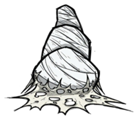
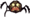
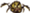

| Spider Den | |
|  |
|
| Health | 250,500,1000 |
| Resources | |
| Spawns |   |
| Renewable? | Yes. |
| DebugSpawn | "spiderden", "spiderden_2", "spiderden_3" |
| “ | A nest of filth and villainy. | ” |
| –Wendy | ||
A Spider Den is a nest in which Spiders and Spider Warriors spawn and live. At Dusk, Spiders emerge in search of food and return to the Den during the Day. The number of Spiders that live in a Den varies depending on its size (see table below). When a Den reaches its final stage, it evolves into a Spider Queen. Spider Dens are surrounded by a creep-like substance called Sticky Webbing, which slows down anything caught in it, aside from Spiders and Webber. Sticky Webbing will grow on any surface except a small area around a Rabbit Hole.
When attacked, Spiders and Spider Warriors currently inside will emerge and attack. If anything steps on the Sticky Webbing that surrounds the Den, a few Spiders might come out and investigate. If they do not encounter anything before reaching the end of the web, the Spiders will return to the Den.
It takes 3 game hours (90 seconds) for a Den to respawn a single spider. When a Den reaches the next stage, all Spiders are renewed.
A Spider Den has 4 growth stages: 5–10 days in tier 1, 5–10 days in tier 2, 12.5–25 days in tier 3, and finally evolving into a Spider Queen that tends to spawn only when the player character comes close enough. Spider Queens can only spawn from mature tier 3 Dens and will leave a tier 1 Den behind when this happens (which grows into tier 2 in 60 seconds real time). After wandering to a new location, usually further away from other spider dens, the Queen will settle down, transforming into a new tier 1 den.
The amount, as well as the type of Spiders spawned from a Den, varies depending on the tier. Spider Warriors only spawn from tier 2 and above. The amount of Silk dropped by destroying a Den also increases with its size. Tier 3 Dens also drop Spider Eggs when destroyed, allowing new dens to be planted by the player anywhere in the world.
| Den Size | Next Stage | Spiders | Released When hit | Health | Loot | DebugSpawn |
|---|---|---|---|---|---|---|
| Tier 1 | 5–10 days | 3 | 2 | 250 hp | 2 Silk | "spiderden" |
| Tier 2 | 5–10 days | 6 (1 will spawn as a warrior) | 4 | 500 hp | 4 Silk | "spiderden_2" |
| Tier 3 | 12.5–25 days | 9 (3 will spawn as warriors) | 6 | 1000 hp | 6 Silk, 1 or multiple Spider Eggs | "spiderden_3" |

Don't Starve How To Take Down A Spider Hive!
An Effective Way On Destroying Dens All Tiers
An easy method to destroy any size Spider Den without taking damage is to place several Traps in a line leading away from the Spider Den. After standing on the web, a few Spiders will come out to investigate, and then they will step on the Traps as they're led away from the Den. Traps can be emptied and reset to repeat the process until the Spider Den is empty (no Spiders inside). The Den can then be safely destroyed.
If getting resources is not important, a Den can be set on fire directly with a Fire Dart, Fire Staff, or indirectly with other fire sources. This will destroy the Den with its resources, leaving spiders that were outside at the moment homeless. Also, if you want a clean job just add some Slurtle Slime, or Gunpowder and light it, notice it will leave you with only monster meat and a few low-health spiders.
Reign of Giants changes the spawn of spiders to increase the difficulty. During Spring spiders spawn more frequently, with a Tier 1 having 1 extra spider. Spiders have a chance to drop a skull, which can be used to unlock Webber. Webber can upgrade Spider Dens by using Silk.
| Naturally spawning world objects | |
| Plants | Berry Bush • Carrot • Cave Banana Tree • Cave Lichen • Flower (Evil Flower, Fern) • Grass • Light Flower • Lureplant • Mandrake • Mushrooms • Mushtree • Plant • Reeds • Sapling • Spiky Bush • Tree • Totally Normal Tree |
| Mobs and Mob Housing | Beehive • Hound Mound • Pond • Pig Fortress • Pig House • Pig King • Pig Torch • Rabbit Hutch • Rundown House • Slurtle Mound • Spider Den • Spilagmite • Splumonkey Pod • Tallbird Nest • Walrus Camp • Worm Hole |
| Inanimate | Ancient Pseudoscience Station • Ancient Statue • Basalt • Boulder • Gramaphone • Grave • Harp Statue • Headstone • Suspicious Dirt Pile • Marble Pillar • Marble Tree • Maxwell's Door • Maxwell Statue • Maxwell's Light • Merm Head • Nightmare Light • Nightmare Lock • Nightmare Throne • Obelisk • Ornate Chest • Pig Head • Pillars • Relic • Sinkhole • Skeleton • Stalagmite • Touch Stone • Thulecite Wall |
| Things | Box Thing • Crank Thing • Eye Bone • Metal Potato Thing • Ring Thing • Wooden Thing |
{kind=link}
{kind=link}
{kind=link}
{kind=link}
{kind=link}
{kind=link}